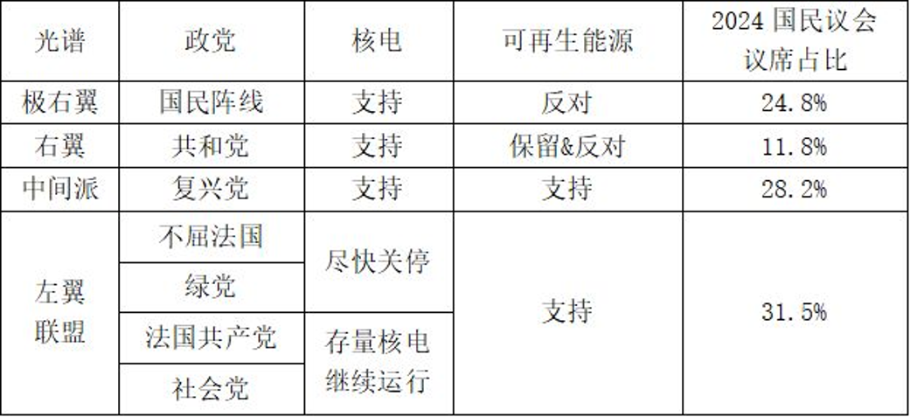

⚡ 法国能源政策转向
核电复兴 · 光伏目标下调 · 欧盟碳减排驱动
🌍 欧盟气候与能源目标
1990203020402050
※ 净零指通过碳捕获、碳交易中和剩余排放
☀️ 2030 年光伏容量目标 · NECP
⚠️ 法国在2025年最终修订版中将光伏目标降低 7.2 GW (54→48 GW)，
降幅超过其他9个国家的增幅总量
🏭 法国 PPE 能源规划演变
PPE 1 (2015)
将核电占比降至 50%，开启减核路线
⚛️ 降低核电
PPE 2 (2019)
计划关闭 14座 核反应堆，大幅提升可再生能源目标
⚛️ 加速减核
PPE 3 (2026)
维持并延长现有核电站寿命，新建6座EPR2；光伏目标从54 GW降至48 GW
⚛️ 核电复兴
☀️ 光伏目标 -7 GW
🔁 核心转向：从“降低核电”到“核电复兴”，同时下调光伏目标
📌 1. PPE 3 能源计划的持续性
作为法国实现2050净零排放目标的长期计划，PPE计划每5年修订一次，且每次计划覆盖未来10年的发展规划细则。至少在2030年前，除非出现重大核安全问题，法国不会改变目前的核电复兴战略。
🗳️ 2. 政治支持率高（国民议会2024年议席占比）

※ 图片文件: policy.png (请确保与HTML在同一目录下)
支持核电的右翼+中间派合计占比超过65%，即使2027年左翼胜出，其内部对核电态度分歧，难以统一放弃核电；目前法国民众对右翼党派的支持率更高，左翼内部斗争分散选票，胜算较小。
核电支持阵营议席占比示意
支持核电的议席占比约65% (右翼+中间派+极右翼部分)
⚡ 3. 经济性与能源安全性
2026年美以伊冲突重新激发民众对能源安全、能源独立和能源价格的焦虑情绪。保持以核电为基础的能源结构能够支持法国进一步保持能源安全性，减少能源价格和经济受到国际形势的冲击。核电作为稳定、低成本的基荷电源，是保障法国能源主权和经济稳定的关键。